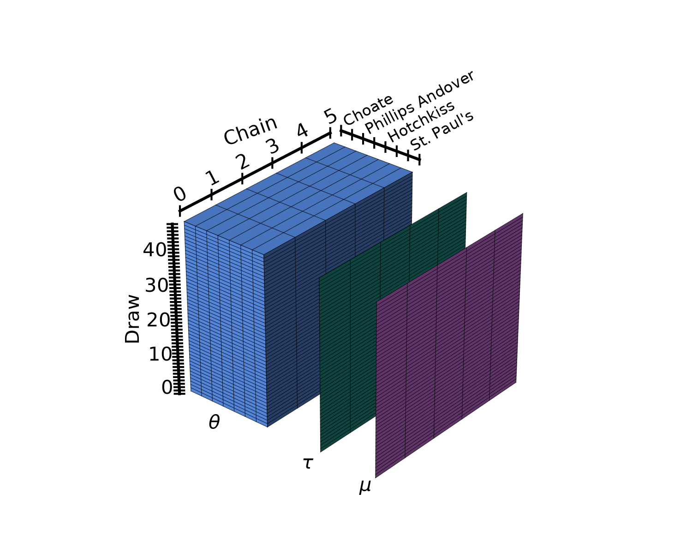

PyMC 4.0 with labeled coords and dims#
import arviz as az
import matplotlib.pyplot as plt
import numpy as np
import pandas as pd
import pymc as pm
import aesara.tensor as at
rng = np.random.default_rng()
az.style.use("arviz-darkgrid")
1st example: rugby analytics#
We will use an alternative parametrization of the same model used in the rugby analytics example taking advantage of dims and coords. Here, we will use as observations a 2d matrix, whose rows are the matches and whose columns are the field: home and away.
The first step after preprocessing is to define the dimensions used by the model and their coordinates. In our case, we have 3 dimensions:
team: each team will have its own offensive and defensive powermatch: an integer identifying the match. There are 6 teams who play twice against each other so we have6*5*2=60matchesfield: either home or away.
These coordinates are passed to pm.Model as a dict whose keys are dimension names and whose values are coordinate values. The dimensions can then be used when defining PyMC variables to indicate their shape.
df_rugby = pd.read_csv(pm.get_data('rugby.csv'), index_col=0)
home_idx, teams = pd.factorize(df_rugby["home_team"], sort=True)
away_idx, _ = pd.factorize(df_rugby["away_team"], sort=True)
coords = {
"team": teams,
"match": np.arange(60),
"field": ["home", "away"],
}
with pm.Model(coords=coords) as rugby_model:
# global model parameters
home = pm.Flat('home')
sd_att = pm.HalfStudentT('sd_att', nu=3, sigma=2.5)
sd_def = pm.HalfStudentT('sd_def', nu=3, sigma=2.5)
intercept = pm.Flat('intercept')
# team-specific model parameters
atts_star = pm.Normal("atts_star", mu=0, sigma=sd_att, dims="team")
defs_star = pm.Normal("defs_star", mu=0, sigma=sd_def, dims="team")
atts = pm.Deterministic('atts', atts_star - at.mean(atts_star), dims="team")
defs = pm.Deterministic('defs', defs_star - at.mean(defs_star), dims="team")
home_theta = at.exp(intercept + home + atts[home_idx] + defs[away_idx])
away_theta = at.exp(intercept + atts[away_idx] + defs[home_idx])
# likelihood of observed data
pm.Poisson(
'points',
mu=at.stack((home_theta, away_theta)).T,
observed=df_rugby[["home_score", "away_score"]],
dims=("match", "field")
)
rugby_idata = pm.sample(1000, tune=1000, cores=4)
Auto-assigning NUTS sampler...
Initializing NUTS using jitter+adapt_diag...
Multiprocess sampling (4 chains in 4 jobs)
NUTS: [home, sd_att, sd_def, intercept, atts_star, defs_star]
Sampling 4 chains for 1_000 tune and 1_000 draw iterations (4_000 + 4_000 draws total) took 20 seconds.
We have now defined the shapes of some of our variables (atts_star and defs_star) and annotated the dimensions of some others. This is convenient and makes the code easier to understand, but we need to remember that in PyMC, dimensions are not inherited like in xarray.
atts is atts_star minus a scalar value and it will be an array with the same shape as atts_star even without the dims argument. However, we need to annotate the dimension if we want the output to have it.
In PyMC 4.0, the default return type of all sampling functions is InferenceData:
print(type(rugby_idata))
<class 'arviz.data.inference_data.InferenceData'>
2nd example: radon multilevel model#
We will now use one of the many models in the A Primer on Bayesian Methods for Multilevel Modeling notebook to dive deeper into coords and dims functionality. We won’t cover the model itself, it’s already explained in the example notebook, we will explain in detail how are labeled coords and dims being used.
The code used to load and clean the data is hidden, click the button below to see it.
Show code cell source
srrs2 = pd.read_csv(pm.get_data("srrs2.dat"))
srrs2.columns = srrs2.columns.map(str.strip)
srrs_mn = srrs2[srrs2.state == "MN"].copy()
srrs_mn["fips"] = srrs_mn.stfips * 1000 + srrs_mn.cntyfips
cty = pd.read_csv(pm.get_data("cty.dat"))
cty_mn = cty[cty.st == "MN"].copy()
cty_mn["fips"] = 1000 * cty_mn.stfips + cty_mn.ctfips
srrs_mn = srrs_mn.merge(cty_mn[["fips", "Uppm"]], on="fips")
srrs_mn = srrs_mn.drop_duplicates(subset="idnum")
u = np.log(srrs_mn.Uppm).unique()
n = len(srrs_mn)
srrs_mn.county = srrs_mn.county.map(str.strip)
srrs_mn["county_code"], mn_counties = pd.factorize(srrs_mn.county)
srrs_mn["log_radon"] = np.log(srrs_mn.activity + 0.1)
The first step is again defining the dimensions and their coordinate values:
Level: observations can correspond to the basement or the first floorCounty: each county has its own basement, intercept:a, and first floor, slopeb, effects. Details are in the example notebookparam: one ofa,bparam2: same as param, used for the covariance matrix because a variable can’t have repeated dimensions
We will also use a dimension called obs_id for the n observations. In that case however, we don’t care about the coordinate values and we are fine with them being an integer id.
In PyMC 4.0, if you annotate the dimensions of a pm.Data object (also of pm.ConstantData or pm.MutableData which are aliases of pm.Data), that dimension will be automatically created as dimension without coordinate values.
coords = {
"level": ["basement", "floor"],
"county": mn_counties,
"param": ["a", "b"],
"param2": ["a", "b"],
}
We’ll begin to define the model creating the indexing arrays that will implement the hierarchical model. We are using the pm.Data container to tell ArviZ to store the variables in the constant_data group. Moreover, pm.Data defines a theano shared variable, so its values can be modified in order to call pm.sample_posterior_predictive using different data. This is particularly interesting for regressions for example in order to generate predictions for the model.
with pm.Model(coords=coords) as radon_model:
floor_idx = pm.ConstantData("floor_idx", srrs_mn.floor, dims="obs_id")
county_idx = pm.ConstantData("county_idx", srrs_mn.county_code, dims="obs_id")
We’ll also use a LKJCholeskyCovas prior for the covariance matrix. As you can see, it has no dims argument. We will have to indicate the dims that correspond to these variables with the idata_kwargs argument. idata_kwargs is used to indicate pm.sample what arguments to pass to pm.to_inference_data, which is called internally to convert the trace to InferenceData.
with radon_model:
sd_dist = pm.Exponential.dist(0.5)
a = pm.Normal("a", mu=0.0, sigma=5.0)
b = pm.Normal("b", mu=0.0, sigma=1.0)
z = pm.Normal("z", 0.0, 1.0, dims=("param", "county"))
chol, corr, stds = pm.LKJCholeskyCov(
"chol", n=2, eta=2.0, sd_dist=sd_dist, compute_corr=True
)
We now will store two intermediate results as variables. However, one is wrapped inside a pm.Deterministic whereas the other is not. Both are equally valid. pm.Deterministic tells PyMC to store that variable in the trace. Thus pm.Deterministic should only be used when we actively want to store the intermediate result. In our case, we want to store ab_county but not theta.
As we saw in the previous example, pm.Deterministic also has a dims argument, but it can only be used to annotate the dimensions of that variable, not to define an array variable from scalar parameters.
with radon_model:
ab_county = pm.Deterministic("ab_county", at.dot(chol, z).T, dims=("county", "param"))
theta = a + ab_county[county_idx, 0] + (b + ab_county[county_idx, 1]) * floor_idx
sigma = pm.Exponential("sigma", 1.0)
pm.Normal("y", theta, sigma=sigma, observed=srrs_mn.log_radon, dims="obs_id")
Finally we will call pm.sample and define the dimensions of the covariance matrix as idata_kwargs.
with radon_model:
radon_idata = pm.sample(
2000, tune=2000, target_accept=0.99, random_seed=75625,
idata_kwargs={"dims": {"chol_stds": ["param"], "chol_corr": ["param", "param2"]}}
)
Auto-assigning NUTS sampler...
Initializing NUTS using jitter+adapt_diag...
Multiprocess sampling (4 chains in 4 jobs)
NUTS: [a, b, z, chol, sigma]
Sampling 4 chains for 2_000 tune and 2_000 draw iterations (8_000 + 8_000 draws total) took 382 seconds.
There is life outside the posterior#
The posterior is the center of Bayesian analysis but other quantities such as the prior or the posterior predictive are also crucial to an analysis workflow. We’ll use a linear regression to quickly showcase some of the key steps in a Bayesian workflow: prior predictive checks, posterior sampling, posterior predictive checks (using LOO-PIT) and out of sample predictions.
We will start generating some simulated data (code hidden, click to expand) and defining the model. As it’s a simple linear regression we’ll only have scalar parameters, a, b and sigma.
Show code cell source
a_true = 2
b_true = -0.4
x = np.linspace(0, 10, 31)
year = np.arange(2022-len(x), 2022)
y = a_true + b_true * x + rng.normal(size=len(x))
fig, ax = plt.subplots()
ax.plot(x, y, "o-")
ax.text(
0.93, 0.9, r"$y_i = a + bx_i + \mathcal{N}(0,1)$", ha='right', va='top', transform=ax.transAxes, fontsize=18
)
ax.set_xticks(x[::3])
ax.set_xticklabels(year[::3])
ax.set_yticks([])
ax.set_xlabel("Year")
ax.set_ylabel("Quantity of interest");
with pm.Model() as linreg_model:
# use x_ to avoid overwriting x previously defined as np.ndarray
x_ = pm.MutableData("x", x, dims="year", coords={"year": year})
a = pm.Normal("a", 0, 3)
b = pm.Normal("b", 0, 2)
sigma = pm.HalfNormal("sigma", 2)
pm.Normal("y", a + b * x_, sigma, observed=y, dims="year")
We have now written a model in order to study our quantity of interest y. We have used everything we have seen so far, the pm.MutableData container and the labeled dims and coords.
We will now simulate a workflow starting from prior predictive checks and finishing with predicting the values of our quantity of interest in 2022 and 2023.
Here however, as our goal is to generate out of sample predictions, there is an important difference. Instead of providing the coordinates when initializing the model context, we add them in the call to pm.MutableData. By initializing the coordinates with a pm.MutableData object we make sure that we can later modify both the length of the year dimension and its associated coordinate values.
The dimensions defined from coords passed while initializing the model context can’t be modified. Their length is fixed. The coordinate values can be updated, but only for an array of the same length.
Priors#
We start by sampling both prior and prior predictive with pm.sample_prior_predictive. In PyMC 4.0, this returns an InferenceData object with multiple groups depending on the data available, if provided, variables will have their corresponding dims and coords.
with linreg_model:
linreg_idata = pm.sample_prior_predictive(700)
linreg_idata
Inference data with groups: > prior > prior_predictive > observed_data > constant_data
We can now use plot_ppc to perform prior predictive checks for our model.
az.plot_ppc(linreg_idata, group="prior");
Posterior#
The next step will be computing the posterior. As we have seen, we can use return_inferencedata to get an InferenceData as a result of pm.sample. In this case however, we will store it as an auxiliary variable to then use InferenceData.extend and add the new groups to the linreg_idata.
with linreg_model:
idata_aux = pm.sample()
linreg_idata.extend(idata_aux)
Auto-assigning NUTS sampler...
Initializing NUTS using jitter+adapt_diag...
Multiprocess sampling (4 chains in 4 jobs)
NUTS: [a, b, sigma]
Sampling 4 chains for 1_000 tune and 1_000 draw iterations (4_000 + 4_000 draws total) took 7 seconds.
linreg_idata
Inference data with groups: > posterior > log_likelihood > sample_stats > prior > prior_predictive > observed_data > constant_data
az.plot_pair(linreg_idata);
Posterior predictive#
Our third step will be to evaluate the posterior predictive at the observations so we can perform model checking with functions such as plot_ppc or plot_loo_pit. sample_posterior_predictive already returns an InferenceData, we will use the extend_inferencedata argument to indicate PyMC to add the new groups inplace.
This has two main advantages. plot_loo_pit requires both the posterior_predictive group, generated here and the log_likelihood group which was created in pm.sample. In addition, keeping all our data in a single InferenceData means we can store it as a netCDF and share a single file to allow reproducing the whole exploratory analysis of our model.
with linreg_model:
pm.sample_posterior_predictive(linreg_idata, extend_inferencedata=True)
linreg_idata
Inference data with groups: > posterior > posterior_predictive > log_likelihood > sample_stats > prior > prior_predictive > observed_data > constant_data
We will now get to use plot_loo_pit, which as expected does not show any issues. To learn how to interpret those plots, you can read the LOO-PIT tutorial.
az.plot_loo_pit(linreg_idata, y="y");
Predictions#
Finally, our last step will be to get some predictions, which in this case is evaluating the posterior predictive at positions different than the observations. In the example below, we are evaluating our predictions at 2022 and 2023. To do so, we are using pm.set_data to modify the values of x to the ones that correspond to these two future years and to update the coordinate values of the year dimension.
Here we will use predictions and extend_inferencedata keywords. This will store these new samples in the predictions group and the modified x values in predictions_constant_data and add these groups inplace to our InferenceData object
with linreg_model:
pm.set_data({"x": x[-1] + x[1:3]}, coords={"year": [2022, 2023]})
pm.sample_posterior_predictive(linreg_idata, predictions=True, extend_inferencedata=True)
linreg_idata
Inference data with groups: > posterior > posterior_predictive > predictions > log_likelihood > sample_stats > prior > prior_predictive > observed_data > constant_data > predictions_constant_data
az.plot_posterior(linreg_idata, group="predictions");
Package versions used to generate this post:
%load_ext watermark
%watermark -n -u -v -iv -w
Last updated: Mon Jun 06 2022
Python implementation: CPython
Python version : 3.9.10
IPython version : 8.3.0
aesara : 2.6.6
matplotlib: 3.5.1
numpy : 1.21.5
arviz : 0.13.0.dev0
pymc : 4.0.0
xarray : 2022.3.0
pandas : 1.4.2
Watermark: 2.3.0
Comments are not enabled for this post, to inquiry further about the contents of the post, ask on PyMC Discourse. Feel free to tag me at @OriolAbril